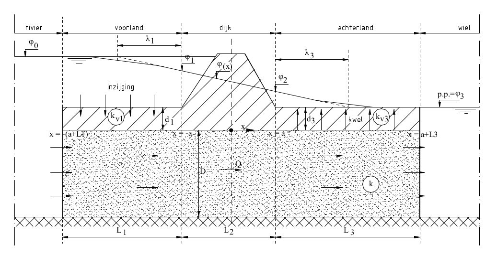

Stationair model¶
Op deze pagina volgt een uitleg van de implementatie van het stationaire model. Achtergronden staan in bijlage 4 van het Technisch rapport Waterspanningen bij Dijken voor de Waterkeringen [1].
Onder de aanname van horizontale stroming in het watervoerende zandpakket en verticale stroming in de weerstandbiedende deklaag is een analytische oplossing beschikbaar voor het debiet en het stijghoogteverloop in het zand.
{kind=link}

Schematisering grondwaterstroming stationair model (figuur b4.4 uit voor de Waterkeringen [1])¶
Het stationaire model houdt in dat de respons op een gegeven locatie \(x\) constant is. Op elke locatie is het verband tussen de stijghoogte in het watervoerende pakket \(\phi(x)\) en de respons \(r(x)\) bekend door:
en andersom:
Aan het zandpakket met afdekkende kleilaag worden de volgende weerstanden gedefinieerd. Voor het voorland:
en voor het achterland:
De totale weerstand is de som van bovenstaande weerstanden: \(\sum W = W_1 + L_2 + W_3\).
In het geval van een radiale (intrede)weerstand is er een extra weerstandsfactor gedefinieerd:
De radiale weerstand kan aan de totale weerstand \(\sum W\) worden toegevoegd.
De respons ter plaatse van de buitenteen \(r_{but}\) en de binnenteen \(r_{bit}\) van de dijk is gedefinieerd als:
en
Het model neemt aan dat tussen de buitenteen en de binnenteen van de dijk er geen uitwisseling plaatsvindt tussen het zandpakket en de deklaag. Over deze lengte \(L_2\) wordt lineair geïnterpoleerd. Een bijzonder geval is wanneer \(L_2 = 0\). We spreken dan van een kantelpunt. De definitie van de respons in het kantelpunt (zie bladzijde b3-7 van [1] is:
Voor de faalmechanismen piping en macrostabiliteit is het potentiaalverloop verloop in de nabijheid van de dijk van belang. Door de aanname van lineaire interpolatie wordt het potentiaalverloop beschreven door drie formules: één voor het voorland tot de buitenteen, het gebied onder de dijk en een formulering voor het achterland. Hiervoor is het nodig de \(x\) positie in het dwarsprofiel te kennen. Deze module hanteert hiervoor de volgende definities:
De \(x\) loopt op richting het achterland. De dijkzate is dan gedefinieerd als: \(L_2 = x_{bit} - x_{but}\).
Als \(x < x_{but}\) dan ligt \(x\) in het voorland en als \(x > x_{but}\) dan ligt \(x\) in het achterland.
Voorland:
Onder de dijk:
Achterland: